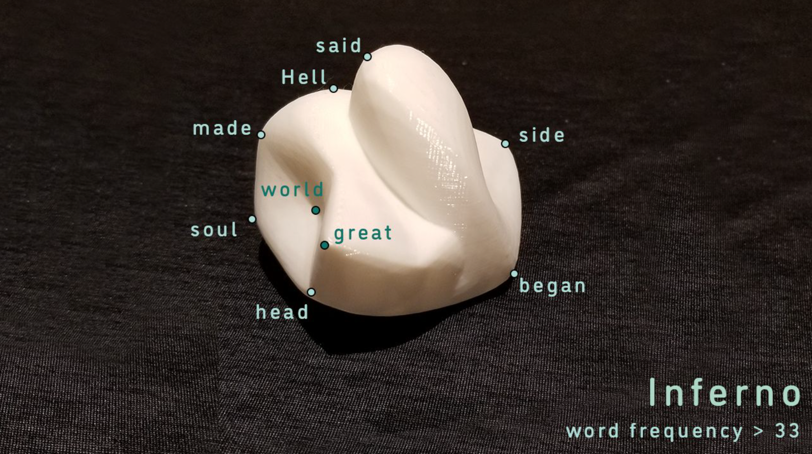
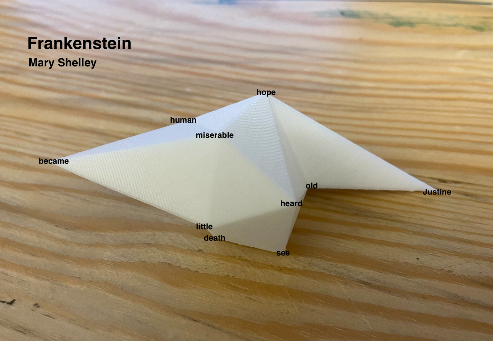
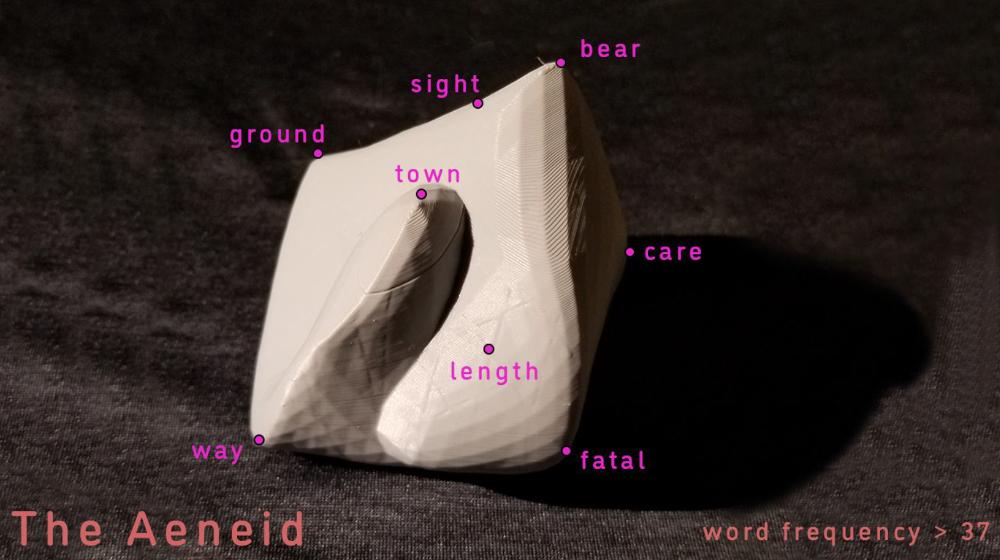
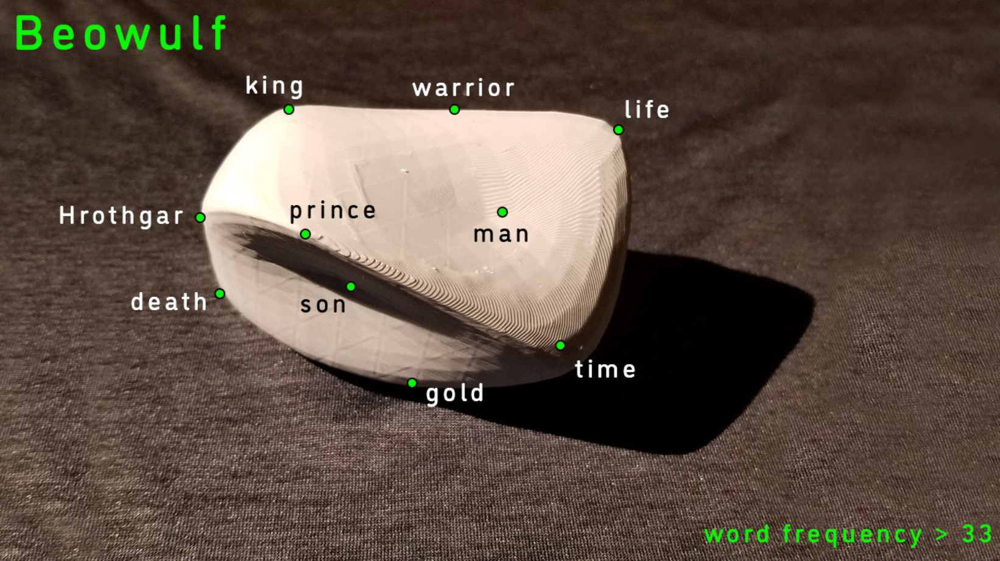
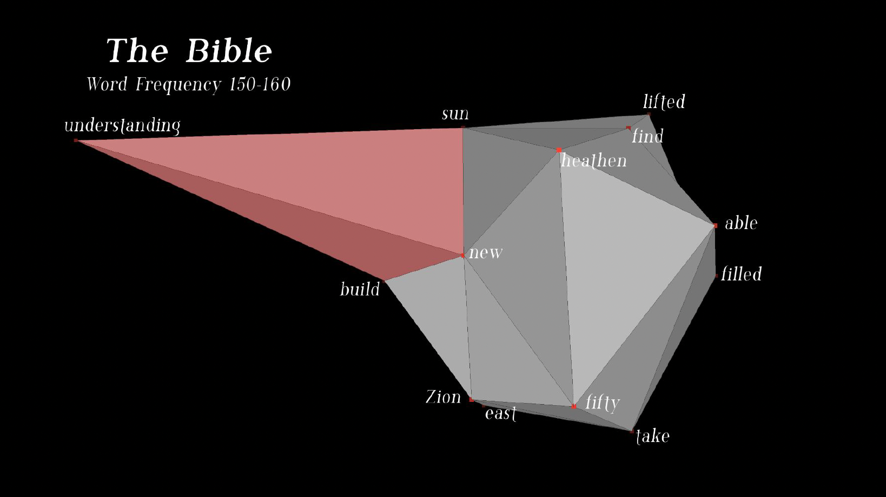

Word Vector Sculptures
"You shall know a word by the company it keeps." —John R. Firth (1957)
Words are deeply nuanced, their meanings shaped by both formal definitions and the diverse contexts in which they appear. These meanings can be represented as vectors in a high-dimensional space, highlighting relationships between words within a body of text. By projecting these vectors into a three-dimensional space, we can visualize these relationships as measurable distances and axes. Some of these relationships are even observable in closed-body 3D prints.
To achieve this, we used t-distributed stochastic neighbor embedding (t-SNE) to reduce 300-dimensional word vectors to three dimensions. The word vectors were derived from the fastText wiki-subwords-300 model, trained on 1 million unique words sourced from the Wikipedia 2017 dataset, the UMBC web-based corpus, and the statmt.org news dataset (a total of 16 billion tokens).
Finally, we utilized MeshLab to generate closed surfaces from the 3D points, creating tangible representations of these linguistic structures.




